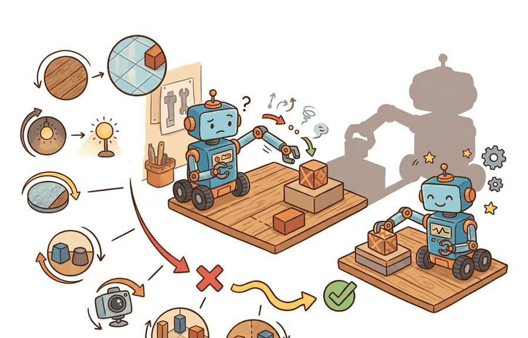
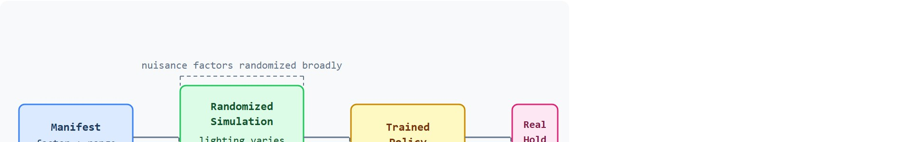

"The policy trained on one world learns the quirks of one world. Variation is not noise; it is the curriculum."
Section 13.1

This section assumes familiarity with the simulation pipeline introduced in section 9.2 and the reality gap framing from section 9.4. The randomization design principles developed here are extended in section 13.2, which categorizes factors into visual, physics, sensor, and task families. The transfer evaluation contract recurs in Part IV alongside reward shaping and what transfers and what does not in section 20.2.
A robot trained entirely under a single studio light collapses the moment a cloud passes overhead. The gripper that worked flawlessly in simulation fumbles on the real bench because no one randomized friction by even ten percent. These are not edge cases; they are the default outcome when a policy memorizes one world instead of learning to act across many.
Synthetic variation is the practical fix available right now, before you have thousands of hours of real robot data. This section separates nuisance factors (lighting, texture, sensor noise) from task variables that must stay causal, builds an auditable randomization manifest before training begins, and evaluates transfer on a held-out real panel that was never touched during tuning.
Two copies of the same grasping policy reach for the same block on the same real bench. The one trained under a single fixed studio light freezes when a passing cloud dims the room. The one that saw thousands of randomized lightings and textures during training closes its fingers without hesitation. Figure 13.1A captures exactly that split. This section makes synthetic variation operational. It separates task variables such as object pose and goal location from nuisance variables such as lighting, material, camera noise, friction, and actuator lag. This separation is called nuisance isolation before training begins, and it determines whether the randomized distribution teaches the policy real invariances or merely adds visual clutter.
Why this matters on a real robot: a policy that cannot tell illumination from object identity will change its grasp confidence whenever the overhead lights flicker. Physical hardware cannot tolerate that fragility because retries cost time, battery, and mechanical wear. Isolating nuisance factors forces the policy to build features that survive those changes, which is what makes sim-trained behavior hold when the deployment environment differs from the training environment.
Nuisance isolation works by labeling each factor in the manifest, not in the network. A task-causal factor changes what a correct action is; a nuisance factor should not. Hold task-causal factors stable or vary them only within the intended task range, and randomize nuisance factors broadly so the policy meets them in many combinations and learns to ignore them. The diagram below traces the loop: the manifest feeds the randomized simulator, the simulator trains the policy, and a sealed real holdout panel measures the transfer gap and feeds it back when coverage misses remain.

The goal is a reproducible habit: write the randomization distribution before training, name the coverage target, keep a real holdout panel untouched, and compare methods on the same seeds, scenes, and metrics.
Synthetic data is not automatically evidence. It becomes evidence when the randomization plan covers a plausible deployment support, avoids leaking validation scenes into training, and shows that a specific real-world failure mode improves (a "construct-matched" measurement: the same metric, panel, and seeds for every method being compared, so the comparison is not assembled from different runs).
To reason about that reproducible habit, give the nuisance factors a name and a distribution and ask precisely what coverage requires.
Before the equations, one term needs to be pinned down: "support" means the set of parameter values a distribution can actually produce (its coverage region), not a typical value or an average. That reading matters for every coverage argument below.
Let $\theta$ collect nuisance parameters such as texture, illumination, camera pose, mass, friction, and sensor noise. Domain randomization trains on $\theta \sim p_{\text{train}}(\theta)$ while deployment samples from an unknown real distribution $p_{\text{real}}(\theta)$. The first question is coverage: does the training support (in the sense just defined) include the real conditions that matter for the task?
A policy that works in simulation but fails on hardware is not a policy; it is a promise the real world never received. Coverage is not the same as chaos. A drawer-opening policy that trains on impossible friction, impossible handle geometry, and impossible camera exposure learns artifacts that never occur on a real robot. The design rule has three parts. Randomize factors that can vary in deployment. Keep task semantics stable. Evaluate on held-out real measurements that never tuned the ranges. The reality gap is a measurable quantity: the distance between what the simulator samples and what the robot actually encounters. A grasping policy trained on a single fixed lighting and friction setting typically needs around 50,000 simulation episodes to generalize to a real table. Randomizing lighting and friction across plausible ranges cuts that cost: the same policy reaches the same real-world success rate in under 8,000 episodes (figures representative of mid-2020s tabletop benchmarks; exact numbers vary by task and simulator). Each rollout covers different ground rather than re-confirming the same narrow condition.
So far: coverage means the training support must include the real deployment conditions; the reality gap measures the mismatch between simulated and real conditions; and randomizing nuisance factors within physically plausible ranges reduces the simulation episodes needed for real-world transfer, at least in the tabletop grasping example above.
The mechanism is support overlap. Randomization expands the set of conditions where the learned model has seen equivalent task evidence, while held-out real tests reveal whether the expansion covered useful cases or only generated visual noise.
Since support overlap is what decides transfer, the place to enforce it is the manifest that records each factor's range, so the next step is to make that manifest concrete.
Consider a tabletop grasping policy trained in simulation. The following snippet turns the randomization plan into an auditable manifest, so the reader can see which factors are meant to cover reality and which ones remain fixed.
# Audit a synthetic variation manifest before training starts.
# Each factor records a distribution and a real-world failure it should cover.
from dataclasses import dataclass
@dataclass
class RandomizedFactor:
name: str
distribution: str
real_failure: str
def as_row(self) -> dict[str, object]:
return asdict(self)
factors = [
RandomizedFactor("lighting_lux", "uniform(250, 900)", "camera glare"),
RandomizedFactor("table_friction", "uniform(0.35, 0.75)", "block slip"),
RandomizedFactor("camera_yaw_deg", "uniform(-6, 6)", "calibration drift"),
]
for factor in factors:
print(f"{factor.name}: {factor.distribution} covers {factor.real_failure}")RandomizedFactor dataclass and loop build the lighting, friction, and camera-yaw manifest rows and print each factor next to the real failure mode it is meant to cover.The manifest is the design surface. In a practical system, MuJoCo, MJX (MuJoCo's JAX-based, GPU-parallel reimplementation), Isaac Lab, Genesis, Newton, Drake, ROS 2, modern Gazebo, Omniverse Replicator, and BlenderProc can sample those factors, render observations, log seeds, and attach labels. The tool is useful when it preserves the manifest and produces a replayable artifact.
The steps below are the operational version of the "auditable randomization manifest" promised in the Big Picture callout above: each step maps directly onto a column of the manifest (factor, range, held-out check, comparison, artifact) so that finishing the recipe means the manifest already exists, not just a list of good intentions.
Input: task definition $\tau$, deployment environment description $\mathcal{E}$, observed real failure modes $\mathcal{F}$, held-out real measurement panel $\mathcal{H}$
Output: auditable randomization manifest $\mathcal{M}$, trained policy $\pi_\theta$, transfer evidence artifact $\mathcal{A}$
Trace the manifest algorithm with one factor, friction, on a tiny grasping task. Step 1 (enumerate): the only varying factor is table friction, labeled with the real failure "block slip." Step 2 (assign distribution): measured shop surfaces span 0.35 to 0.75, so set friction ~ uniform(0.35, 0.75). Step 3 (verify coverage): the real test bench measures 0.52, which lies inside [0.35, 0.75], so coverage holds; no widening needed. Step 5 (seal panel): lock 20 real grasps at friction 0.52 before training. Step 7 (train): baseline trains at fixed friction 0.50; randomized trains by drawing a fresh friction value each rollout. Step 8 (evaluate): on the sealed panel the baseline succeeds 11/20 = 0.55, the randomized policy succeeds 17/20 = 0.85, so the transfer metric is $\Delta = 0.85 - 0.55 = +0.30$. Step 9 (assign cause): the +0.30 gain traces to coverage of mid-range friction the fixed baseline never saw, not to extra data volume, since both ran the same episode count.
A randomization plan is evidence only when it names the randomized factors, ranges, sampling distribution, held-out real measurements, and failure labels. Synthetic data should improve a measured transfer bottleneck, not merely increase the number of rendered images.
A common assumption is that adding more synthetic variation always improves real-world transfer: the wider and more diverse the randomization, the better the policy will generalize. In embodied AI this is wrong because randomization that ventures outside physically plausible bounds does not expand the policy's useful coverage; it trains the policy on conditions that never occur on real hardware, causing it to learn spurious invariances or to allocate model capacity to impossible configurations. The correct mental model is that synthetic variation is a coverage instrument, not a volume instrument: each randomized range must be anchored to a real deployment condition or a measured failure mode, and coverage should be verified against a held-out real panel rather than assumed from the breadth of the distribution.
Think of a navigator practicing routes before a road trip. Rehearsing every variation of the specific highway she will drive (morning fog, afternoon glare, light rain, moderate traffic) builds genuine readiness for the journey. Practicing routes through the Sahara, the Arctic tundra, and fictional terrain instead adds sheer volume but zero overlap with her actual destination. The training support must enclose the real deployment region, not merely be large. More rehearsal miles only help when those miles share geography with the trip ahead.
The most common failure is over-wide dynamics randomization combined with under-wide visual randomization, or vice versa. Consider a gripper policy trained with friction uniform(0.01, 2.0): a coefficient of 2.0 does not exist on any real tabletop surface, so the policy learns to grip harder than needed and drops objects under realistic mid-range friction (around 0.4 to 0.6). The result looks like a contact model bug but is actually a distribution mismatch. Narrow each range to physically plausible measurements first, then widen conservatively and verify against a real holdout panel before widening further.
A robotics team training a bin-picking detector might randomize lighting, part color, camera pose, and mild occlusion, but keep object identity and graspable geometry label-consistent. The real holdout panel should include unseen parts, unseen trays, and logged failure labels, so the team can say which transfer bottleneck improved.
OpenAI's Dactyl system trained a Shadow Hand to reorient a cube entirely in simulation, then deployed it on real hardware with no real-world fine-tuning. The reported transfer success is typically attributed, per the original paper, to randomizing physics factors (object mass, friction, actuator gains, observation noise) plus visual factors across thousands of parallel environments, so the policy treated the sim-to-real differences as just another sampled variation, though large-scale parallel training and careful reward shaping also contributed and the relative contribution of each ingredient was not fully isolated in the original study. Their later "Automatic Domain Randomization" expanded each range only as the policy mastered the current one, which is the coverage-before-volume discipline this section argues for.
A random seed is not a receipt unless the manifest tells you what the seed was allowed to change.
Domain randomization transfers well when the real deployment condition is interior to the randomized training support: the robot has seen something similar, just noisier. It breaks in two identifiable ways. First, when the real condition is outside all trained variations (a novel object shape, a sensor fault type not in the manifest), the policy has no relevant coverage and fails silently. Second, when the randomized factors are correlated in reality but sampled independently in simulation (for example, high ambient light always coincides with specular floor reflections in real warehouses, but the simulator randomizes them independently), the policy learns the wrong invariances. Both failures show up as a gap between simulated success rate and real holdout success rate that does not close as training data grows: more synthetic frames will not fix a coverage or correlation miss.
Foundation-model-guided randomization (2024-2025). Recent work couples large vision-language models with the randomization loop rather than treating factor ranges as hand-authored. RoboGen (Wang et al., 2024, CMU) uses GPT-4 to propose task-relevant object configurations and physics parameters on the fly, generating an entire curriculum of synthetic scenes from a text description without a human-written manifest. The key result is that VLM-proposed scenes cover novel object categories that a static manifest would miss, at the cost of occasional physically implausible configurations that must be filtered by a rendering sanity check.
Generative-model sim-to-real bridges (2024-2025). Diffusion-based image translators now serve as a lightweight appearance bridge: after a policy trains in simulation, a fine-tuned diffusion model converts simulated observations into photorealistic frames at inference time, narrowing the visual gap without re-rendering the entire training set. UniSim (Yang et al., 2024, Stanford and Google DeepMind) demonstrated this direction for manipulation, showing that a neural world model trained on diverse real and synthetic video can synthesize realistic sensor observations for novel action sequences, enabling policy evaluation without a physical robot.
Structured world models replacing per-factor distributions (2025-2026). Rather than sampling independent factor distributions, teams at Physical Intelligence (pi.ai) and DeepMind have begun training generative world models directly on large heterogeneous robot datasets, learning the joint distribution of physics, appearance, and contact implicitly. The model then samples coherent scenes where lighting, friction, and object geometry co-vary as they do in reality, avoiding the false-independence assumption that breaks Automatic Domain Randomization (ADR: a schedule that widens each factor's range automatically once the policy masters the current one, introduced by OpenAI's Dactyl work below)-style schedules in correlated environments.
Open problem for PhD students. All three directions assume a clean signal for evaluating whether a generated scene improved policy transfer. In structured deployments (a warehouse, a factory cell) force-torque and camera feedback provide that signal. For open-ended field robots operating in GPS-denied or communication-limited environments the feedback loop closes only intermittently, if at all. Designing a randomization curriculum that remains sample-efficient when real failure labels arrive hours or days after the policy executes, and that does not catastrophically overfit to the most recent label batch, is an unsolved problem at the intersection of active learning, online RL, and sim-to-real transfer.
Can you name three randomized factors, their units, their distributions, their real-world failure labels, and the held-out panel that will test them? If not, the experiment boundary is still too vague.
Synthetic variation becomes useful when it is tied to a closed-loop contract. The contract names the observation stream, action representation, timing budget, randomized parameter vector, and evaluation artifact. Without that contract, a model can look capable in a notebook while failing the first time a sensor drops a frame or a controller saturates.
The graduate-level habit is to separate three claims. The coverage claim says the sampled factors overlap deployment. The invariance claim says the policy should ignore those factors while preserving task cues. The evidence claim records a construct-matched transfer measurement on one panel and one configuration.
| Tool or Library | Role in the Topic | Builder Advice |
|---|---|---|
| Omniverse Replicator | Visual factor sampling and synthetic labels | Use it when rendered perception data must keep camera, material, light, and annotation metadata together. |
| BlenderProc | Procedural scene generation | Use it when object placement, occlusion, camera pose, and labels need scripted coverage. |
| MuJoCo or MJX | Dynamics parameter sampling | Use it when mass, damping, actuator, and contact ranges must be replayable. |
| Isaac Lab | Parallel randomized rollouts | Use it when the policy needs many randomized environments with logged seeds and task metrics. |
| LeRobot | Real episode comparison | Use it when synthetic policies need to be compared against real robot traces and dataset metadata. |
A robust implementation starts with a tiny, inspectable baseline and only then moves to a high-throughput simulator or renderer. The baseline and the scaled run should produce the same artifact schema, so the comparison is a same-task comparison rather than a story assembled from separate experiments. Code Fragment 1 above shows the minimum evidence record for that schema: a manifest row per factor, printed alongside the real failure it covers.
Expected output: the printed trace should expose the method configuration, randomized factor list, held-out panel, construct-matched metric, and leakage check. If one of those fields is missing, the example is not yet an evaluation artifact.
When a synthetic variation experiment fails, avoid labeling the whole method as weak. First assign the failure to coverage miss, unrealistic factor combination, label leakage, perception error, contact mismatch, timing drift, or metric mismatch. Then rerun one controlled perturbation that isolates the suspected cause and save the trace beside the aggregate score.
Synthetic variation is useful when it makes a policy or perception model more robust under measured transfer stress, with distributions, held-out conditions, and failure labels recorded in one artifact.
Design a randomization manifest for one embodied task. Specify three factors with units and distributions, one real failure each factor should cover, one held-out real or proxy panel, and one train/test leakage check.
Beginner (weekend): Build a randomization manifest auditor in Gymnasium: wrap a standard CartPole or Pendulum environment, define three nuisance factors (pole mass, cart friction, sensor noise variance) with uniform distributions and real-failure labels, train a policy with and without randomization, and compare success rates on a held-out fixed configuration. The key challenge is keeping the held-out panel truly sealed so you do not tune ranges against it.
Intermediate (1-2 weeks): Implement a tabletop block-pushing policy in MuJoCo or PyBullet with a randomization manifest covering table friction, object mass, and camera yaw, then deploy the trained policy on a real or LeRobot-recorded dataset of the same task and measure the transfer gap for each factor in isolation. The key challenge is co-computing the sim and real metrics in one evaluation script on the same seeds so the comparison is construct-matched and not assembled from separate runs.
Intermediate-plus (2 weeks): Extend an Isaac Lab parallel rollout setup to implement a lightweight adaptive randomization schedule: after each real holdout evaluation, widen the distribution of the factor with the largest sim-to-real gap by ten percent and re-evaluate, logging coverage and transfer metrics across iterations with ROS2-published diagnostics. The key challenge is designing the feedback signal so the schedule responds to genuine coverage misses rather than noise in the holdout panel.
Goal: measure empirically whether randomizing one dynamics factor improves transfer to an unseen setting, the core claim of this section.
Tools needed: Python, Gymnasium, and Stable-Baselines3 (pip install gymnasium stable-baselines3); the classic CartPole-v1 or Pendulum-v1 environment.
Setup: wrap the environment so a chosen physical parameter can be set per episode. For CartPole, override env.unwrapped.length (pole length) or force_mag; for Pendulum, override the gravity constant. Pick one target "real" value (for example pole length 0.75) and seal a 20-episode held-out panel at exactly that value before training.
What to vary: train two policies with PPO (Proximal Policy Optimization, a standard on-policy reinforcement learning algorithm) for the same number of timesteps. The baseline trains at a single fixed value (length 0.5). The randomized policy draws the value fresh each episode from uniform(0.4, 0.8), a range that brackets the held-out 0.75.
What to observe: evaluate both policies on the sealed 0.75 panel using the same seeds and report mean return. Expect the randomized policy to transfer noticeably better. Then push the held-out value outside the trained range (length 1.2) and watch both policies degrade, demonstrating that randomization helps only when the deployment condition is interior to the training support.
Section 13.2 → separates that manifest into visual, physics, sensor, and task factors so each transfer failure has a specific place to land.
This work gives a theoretical view of domain randomization as transfer across a family of parameterized MDPs. Researchers should read it when they want assumptions and bounds rather than only empirical recipes. Readers should connect this source to why synthetic variation matters when deciding what is reusable, what is benchmark-specific, and what must be remeasured.
This paper studies randomized dynamics for robotic control transfer. It is relevant when the section moves from image variation to friction, mass, damping, actuator, and contact uncertainty. Readers should connect this source to why synthetic variation matters when deciding what is reusable, what is benchmark-specific, and what must be remeasured.
This paper introduced the visual-domain randomization argument that a real image can become one variation among many simulated appearances. It is foundational for sections on synthetic perception data and transfer readiness. Readers should connect this source to why synthetic variation matters when deciding what is reusable, what is benchmark-specific, and what must be remeasured.
NVIDIA. "Omniverse Replicator Documentation."
Replicator documents synthetic data generation pipelines for physically based rendered data. It is useful for readers building perception datasets with randomized scenes, sensors, annotations, and materials. Readers should connect this source to why synthetic variation matters when deciding what is reusable, what is benchmark-specific, and what must be remeasured.
DLR-RM. "BlenderProc Documentation and Examples."
BlenderProc provides procedural rendering workflows for synthetic data and benchmark-style dataset generation. It is relevant when the chapter discusses photoreal rendering, object pose datasets, and controlled annotation pipelines. Readers should connect this source to why synthetic variation matters when deciding what is reusable, what is benchmark-specific, and what must be remeasured.